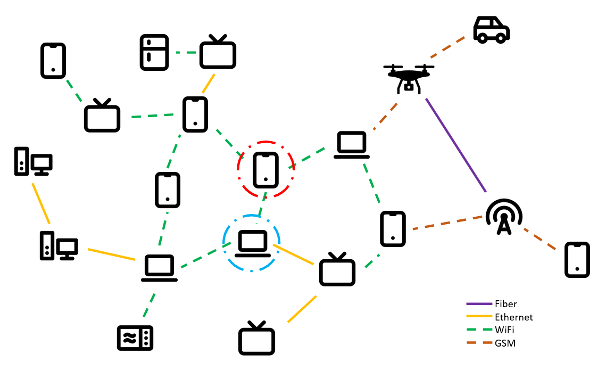
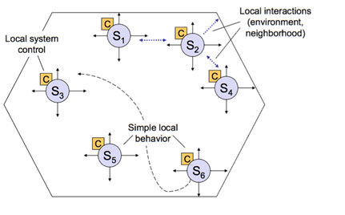
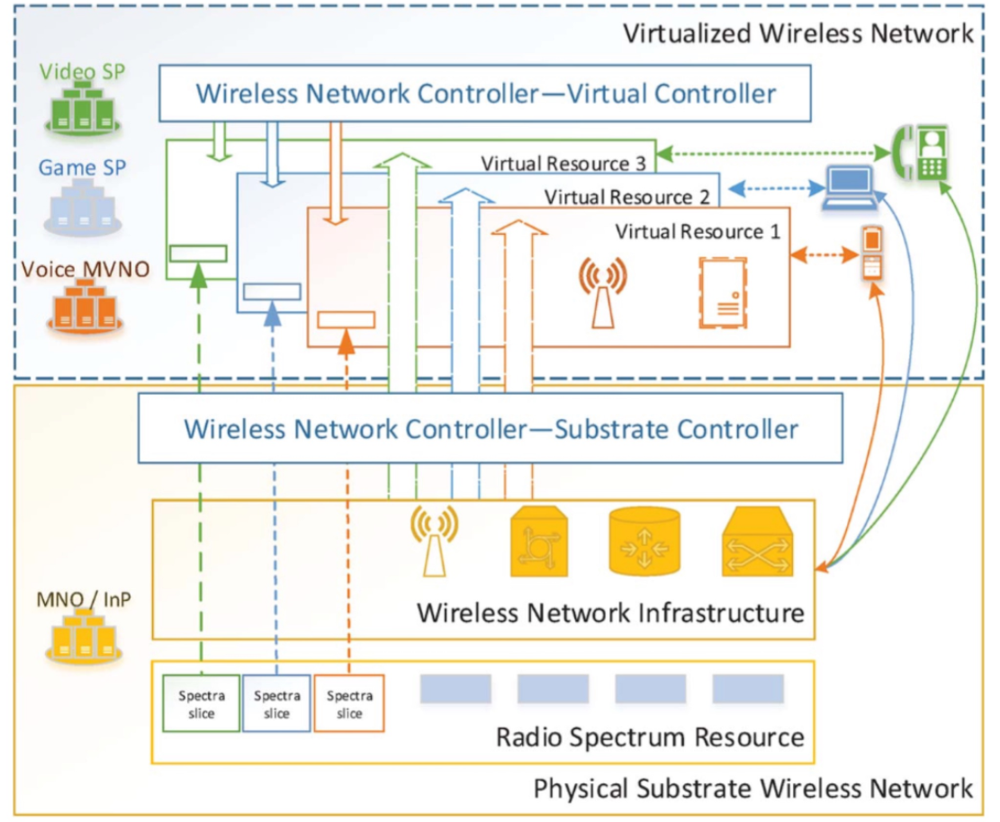
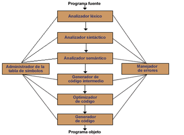
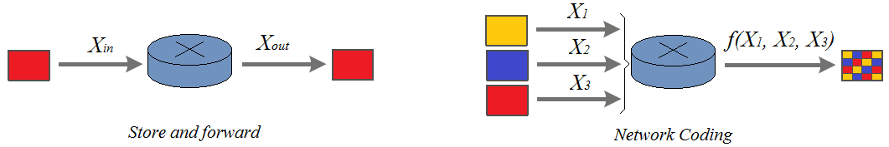
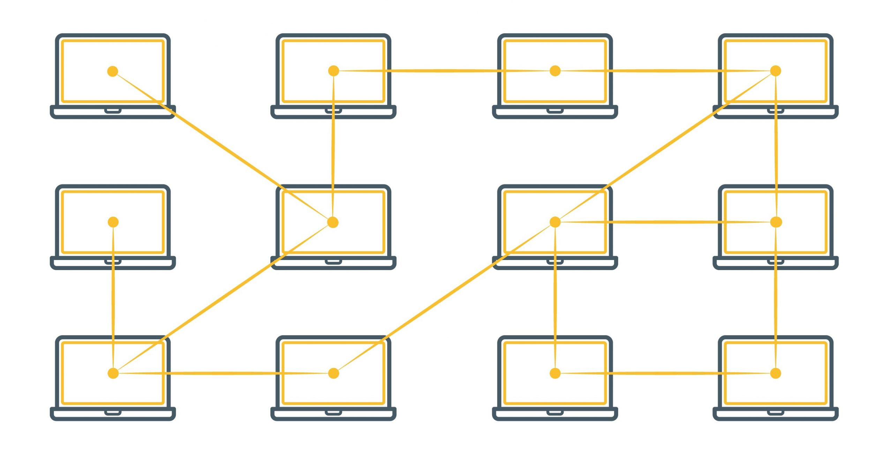
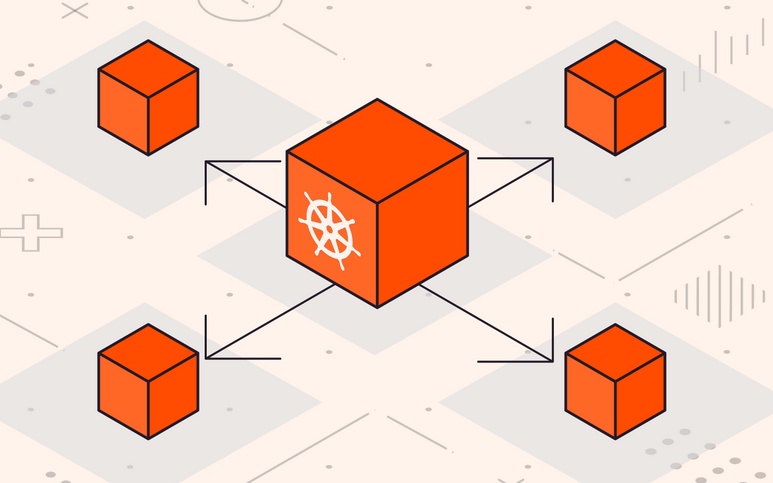

Campos de investigación
“La metafísica de Tlön es también una escuela de la literatura fantástica.”
Jorge Luis Borges, Ficciones
En TLÖN, entendemos la investigación como un ejercicio de invención controlada: cada línea explora un territorio posible, donde teoría, técnica y especulación se entrelazan. Estas rutas temáticas definen los núcleos desde los que articulamos nuestras preguntas, construimos sistemas y expandimos los límites de lo computable.
Redes Adhoc
Conectividad estocástica en arquitecturas descentralizadas
Una red Ad Hoc es aquel conjunto de computadores interconectados mediante interfaces inalámbricas, que opera en entornos con recursos dinámicos y condiciones variables. Estos sistemas se caracterizan por dos propiedades fundamentales: la autoorganización y la descentralización de la infraestructura. Gracias a estas cualidades, las redes Ad Hoc pueden desarrollar comportamientos pseudosociales, adaptándose desde el momento mismo de su conformación hasta el final de su operación.

Desde un punto de vista formal, una red Ad Hoc puede representarse como un grafo aleatorio (Newman, 2003), en el que los nodos —comúnmente móviles— se conectan a través de enlaces dinámicos, llamados aristas, que cambian en función del tiempo y del entorno (por ejemplo, en respuesta a las solicitudes de los usuarios).
Una definición más cercana al enfoque de este proyecto describe estos sistemas como una nube móvil: una plataforma computacional flexible, dinámica y estocástica, que gestiona recursos distribuidos y enlazados de forma inalámbrica. Estos recursos pueden ser modificados, trasladados, aumentados o combinados de manera novedosa, permitiendo nuevas formas de organización computacional (Fitzek & Katz, 2014).
Sistemas Multiagente
Inteligencia distribuida en acción social-colectiva
Los sistemas multiagente forman parte de la inteligencia artificial distribuida y han ganado protagonismo por su capacidad para abordar problemas complejos en entornos cambiantes. Su principal fortaleza radica en la descentralización, lo que permite incorporar propiedades esenciales como la robustez, la adaptación y la autonomía local. En ausencia de un control central, los agentes pueden competir, cooperar o coexistir, generando dinámicas que exigen el diseño de mecanismos para la resolución colectiva de problemas.
Como se ilustra en la figura, el propósito global del sistema no se
impone desde afuera, sino que emerge de las interacciones locales
entre los agentes. Cada componente actúa de forma autónoma,
ajustando su comportamiento en función del contexto, lo cual
permite al sistema evolucionar orgánicamente según las condiciones
del entorno.
Estas características hacen de los sistemas multiagente un modelo
especialmente prometedor para operar sobre redes adhoc, donde la
estructura de comunicación y el entorno mismo están en constante
transformación.

En el contexto del proyecto TLÖN, los sistemas multiagente no solo son una arquitectura funcional, sino también una metáfora operativa: comunidades artificiales que interactúan, se adaptan y evolucionan en entornos inciertos. Cada agente, aunque autónomo, forma parte de un tejido colectivo donde las metas no son impuestas, sino negociadas a través de la dinámica relacional. Esta lógica refuerza la visión del sistema como una ecología computacional capaz de generar orden sin jerarquía, propósito sin programación explícita, y cooperación sin garantías previas.
Virtualización
Infraestructuras definidas por software en movimiento
La virtualización consiste en crear arquitecturas lógicas a partir de entidades físicas, de forma transparente para el usuario (Wang, Prashant, Tipper, 2013). En el contexto del proyecto TLÖN, la virtualización se plantea como un mecanismo para desplegar servidores de alta disponibilidad sobre infraestructuras móviles y descentralizadas como las redes Ad Hoc. Esta operación requiere considerar enlaces dinámicos, movilidad constante y recursos limitados, lo que desafía las nociones tradicionales de estabilidad y control.

Aunque la virtualización inalámbrica suele asumir entornos predecibles, su integración con redes Ad Hoc supone un reto conceptual y técnico. Muchas de sus condiciones mínimas —como el aislamiento, la coexistencia o la convergencia de recursos— parecen en tensión con la naturaleza espontánea y cambiante de las redes móviles. Sin embargo, justamente en esa tensión surge la posibilidad de imaginar nuevas formas de infraestructura, donde el control no reside en el hardware, sino en una capa lógica distribuida.
El desarrollo de tecnologías como Infraestructura como Servicio (IaaS), Redes como Servicio (NaaS) o Redes Definidas por Software (SDN) da cuenta de esta tendencia: el software se convierte en territorio de despliegue, y la red, más que un medio, es una construcción lógica que se adapta, simula y reconfigura sobre la marcha.
Lenguaje
Ontologías activas para la computación distribuida
Un lenguaje es un sistema de signos que permite la expresión y la comunicación entre entes: humanos, animales o máquinas. En los sistemas de cómputo, este principio se concreta en los lenguajes de programación, que se componen de tres niveles fundamentales: léxico, sintáctico y semántico. Lejos de ser herramientas neutrales, los lenguajes de programación modelan el pensamiento, encarnan formas específicas de resolver problemas y establecen las condiciones de posibilidad de lo computable (Aho, 2007; Terfloth, 2008).
La implementación de un lenguaje requiere la construcción de un
compilador, que traduce las instrucciones del usuario a una forma
ejecutable por la máquina. Como se muestra en la figura, este
proceso se organiza en capas funcionales: el analizador léxico
identifica los tokens básicos; el analizador sintáctico verifica la
estructura formal; el analizador semántico evalúa si las
instrucciones tienen sentido dentro del contexto del lenguaje.
Posteriormente, se realiza la generación y optimización de código,
preparando las instrucciones para su ejecución eficiente.
Estos principios se mantienen, con variaciones, en los lenguajes de
dominio específico (DSL), diseñados para resolver problemas
particulares dentro de contextos definidos. En el proyecto TLÖN, el
lenguaje se concibe no solo como un medio de programación, sino
como una ontología activa que estructura las interacciones entre
agentes, redes e infraestructuras.

La aparición de los modelos de lenguaje natural (como los LLMs) ha ampliado radicalmente las posibilidades del lenguaje en los sistemas computacionales. Estos modelos permiten interpretar, generar y negociar significado en entornos no deterministas, acercando las interfaces humanas y artificiales. En el marco de TLÖN, los modelos de lenguaje natural abren la puerta a nuevas formas de interacción entre agentes, donde la lógica simbólica se encuentra con la inferencia estadística, y la comunicación deja de ser una simple instrucción para convertirse en acto contextualizado de interpretación.
Network Coding
Lógica distribuida en movimiento
Network Coding es un paradigma de transmisión propuesto por Ahlswede et al. en el año 2000, que representa una evolución significativa respecto al modelo clásico de comunicación definido por Claude Shannon en 1948. Su principal innovación radica en que los nodos de la red no se limitan a reenviar paquetes, sino que pueden codificarlos activamente, combinando múltiples flujos de datos en tránsito. Este cambio rompe con la lógica tradicional de store-and-forward, abriendo nuevas posibilidades para el diseño de redes adaptativas y eficientes.

Al incorporar procesos de codificación intermedia, Network Coding
permite mejorar el rendimiento general de la red (throughput),
reducir el consumo energético y optimizar el uso del ancho de
banda. Estos beneficios lo hacen aplicable a una amplia gama de
contextos: desde redes inalámbricas ad hoc y sistemas de
distribución de contenido, hasta infraestructuras de
almacenamiento distribuido y protocolos criptográficos para el
intercambio seguro de claves.
Como se muestra en la figura, esta lógica de codificación requiere
una visión más flexible y abstracta de la red: ya no como un simple
canal de paso, sino como un espacio de transformación algorítmica.
Sin embargo, esta potencia viene acompañada de nuevos desafíos en
seguridad y privacidad. Por ejemplo, el sistema se vuelve
vulnerable a ataques de polución, donde un solo paquete malicioso
puede contaminar múltiples flujos de datos codificados. Aun así,
Network Coding también ofrece propiedades criptográficas
emergentes, como mecanismos de confidencialidad derivados
directamente de su estructura.
En el marco de TLÖN, Network Coding se integra como una capa de lógica distribuida, capaz de maximizar la eficiencia y resiliencia de sistemas que, como las redes Ad Hoc, operan en entornos impredecibles, móviles y sin control centralizado.
Ciberseguridad
Confianza emergente en sistemas sin centro
En los sistemas distribuidos de TLÖN, la seguridad no es una barrera, sino una cualidad activa que debe surgir del propio tejido de relaciones entre los componentes. En contextos donde los nodos pueden moverse, desconectarse o fallar, y donde la autoridad está descentralizada, los enfoques clásicos de seguridad pierden efectividad. Por eso, la ciberseguridad aquí se entiende como un proceso dinámico, capaz de responder en tiempo real a entornos cambiantes.
Esto implica diseñar mecanismos criptográficos ligeros, compatibles
con la limitación de recursos en dispositivos móviles, así como
desarrollar protocolos de verificación distribuidos, donde la
confianza se construya mediante consenso entre nodos, y no por
imposición externa. También se exploran estrategias de tolerancia a
fallos maliciosos, resiliencia frente a ataques de envenenamiento
de datos y sistemas de reputación adaptativa entre agentes.
En el ecosistema TLÖN, la ciberseguridad no sólo defiende: también
garantiza la continuidad del diálogo entre agentes, protege la
memoria distribuida del sistema y asegura que la colaboración pueda
persistir incluso bajo amenaza. La seguridad es, así, una forma de
mantener viva la red, sin necesidad de centros ni custodios.

Sistemas Distribuidos
Coordinación sin jerarquía en arquitecturas en red
El diseño distribuido no es una elección técnica, sino una apuesta estructural por la autonomía, la escalabilidad y la adaptabilidad. En TLÖN, los sistemas distribuidos forman el entramado fundamental que permite desplegar funcionalidades complejas sin depender de nodos centrales ni servidores dedicados. Cada componente del sistema opera como un agente autónomo, capaz de percibir, actuar y tomar decisiones en función de su entorno local. Sin embargo, a través de protocolos de sincronización, mensajes asincrónicos y reglas emergentes, estos nodos logran generar comportamientos colectivos coordinados, desde el balanceo de cargas hasta la toma de decisiones distribuida.

Este enfoque se materializa en la integración de tecnologías como
redes Ad Hoc, sistemas multiagente, virtualización móvil y network
coding, las cuales funcionan en conjunto como un solo cuerpo lógico
extendido. Lo distribuido no es solo una manera de organizar los
recursos: es una forma de inteligencia colectiva, resistente,
orgánica y abierta a la contingencia.
En TLÖN, los sistemas distribuidos permiten pensar el cómputo no
como una secuencia de órdenes centralizadas, sino como una
conversación continua entre entidades interdependientes, que se
coordinan no por imposición, sino por mutua adaptación.